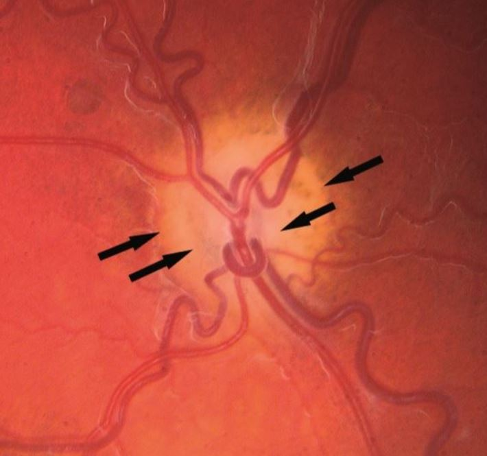
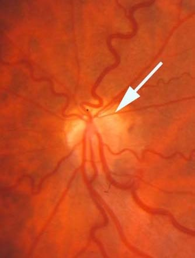

Optic disc appears to have a small diameter on ophthalmoscopy
Trap:
the normal size of the optic disc is difficult to assess by ophthalmoscopy, especially in newborns

Inner pigment ring may surround the margin of the optic disc; an outer pigment ring may surround peripapillary retinal-choroidal atrophy (“double-ring sign”)

Optic discs may appear “topless” and be associated with dense inferior nerve fiber bundle visual field defects in patients born to insulin-dependent mothers